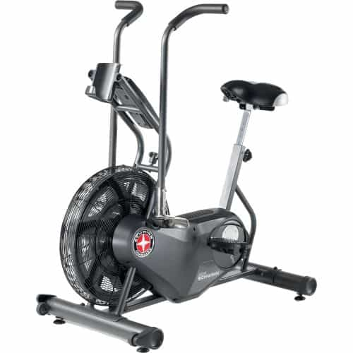
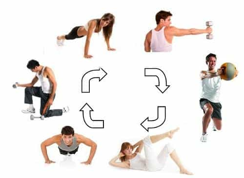

In April 2016 I was in a serious car accident that gave me what is known as a lisfranc dislocation, in which the metatarsals are dislocated from their accompanying connective tissues. For many months I was incapable of walking or doing any of the exercise that I typically enjoy doing.
Since then I have regained almost all of my capabilities. I am capable of lifting weights and doing calisthenics and martial arts (with a few minor modifications, such as kicking with the ball of the foot or instep being right out). However, running is still not something I can do, and will likely not be able to do for at least another year, if at all.
While some may not find this as disappointing as me, something we can all agree on is the vital importance of cardiovascular training. Being able to elevate your heart rate and develop endurance is one of the best things you can do for general health and well-being.
So knowing that, I realized that I had to find various ways of elevating my heart rate now that just going out and hoofing it wasn’t really an option. And with all that introduction out of the way, here are the five cardiovascular exercises that I have been utilizing since I have regained some degree of physical capability.
1. Stationary Cardio

You’re probably familiar with things like the stationary bike and the elliptical. I want to make something very clear here: I hate stationary cardio. The idea of working hard and not accomplishing anything—not even forward movement—is something I find utterly detestable. In short, I have no desire to be akin to a hamster running on his little wheel in his cage.
That being said, I have been forced to adapt and in some ways I see advantages to them. Namely that these machines have quantifiable metrics of time, rate of movement, and heart rate on them that running outside does not. In a pinch, these can work for cardio purposes.
2. Swimming
Probably my favorite non-running form of cardio, swimming is in some ways superior to its terrestrial counterpart. It’s much lower impact on the joints and bones, and it trains essentially all of the muscles of both the upper and lower body.
Plus, you can do swimming of any intensity (while you can theoretically do interval training on a machine, the pounding and rumbling of your body weight on the machine might alarm your fellow gymgoers). You can also do interval training with different strokes or alternate from long distance endurance training to high intensity/low intensity interval training.
The only problem with swimming is that swimming in a pool might have the same issue that running on a cardio machine might have—it’s kind of boring visually, to swim back and forth in the lanes of the pool.
Of course if you have miles of open sea/river lanes to swim in, by all means swim in there instead. But it’s not very common where I live. So, to the issue of boredom, I say “Deal with it”.
3. Shadowboxing
Just as Jack Dempsey says in Championship Fighting, boxing (or any martial art, really) is at its core a very disjointed and awkward sort of movement, certainly different from the rhythmic repetitions of other forms of cardio. Because of this, throwing punches and kicks will get your heart pounding and breathing more labored in short order.
More of a sprint than a distance run, my method of doing this is to throw combinations of punches kicks, and other strikes on the bag or in the air, as hard and fast as I can for a minute or so. Then stop, take a break for 10-20 seconds, and repeat. With just 10-20 minutes of this you will have an outstanding cardio workout.
4. Circuit Training

Circuit training is an example of how resistance training can be utilized for cardiovascular purposes. This is simply where many sets and repetitions of resistance exercise are followed one after the other, with as little rest period between them as possible.
While this can provide a decent cardio and strength workout, it does not provide the maximal workout for either attribute, because maximal strength lifting requires a longer rest period to allow cellular respiration to work and regain cellular energy. As such it would not be my first choice, but it is a nice variation
By giving you information like this, I am attempting to teach you that even if you are handicapped in some fashion, you can still get just as good a cardio workout as an able bodied person. If you are at all capable of movement, there’s no excuse for poor cardio.
Read More: 5 Reasons Men Should Limit Their Cardio